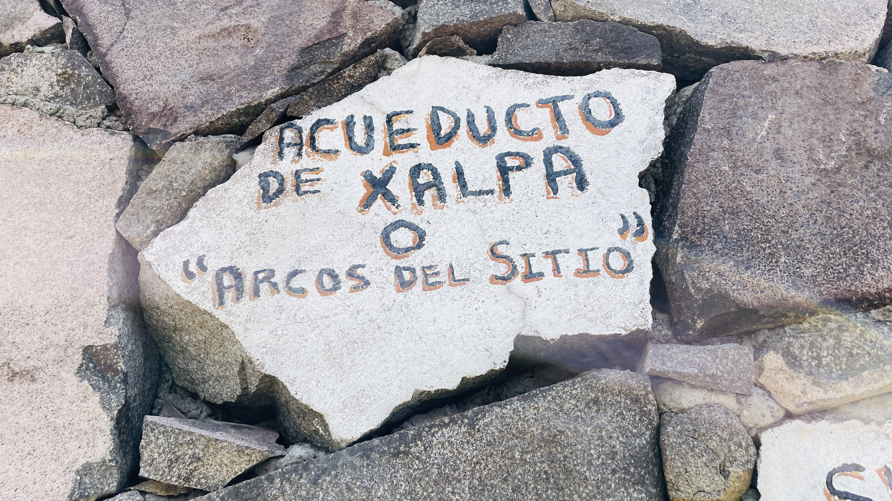
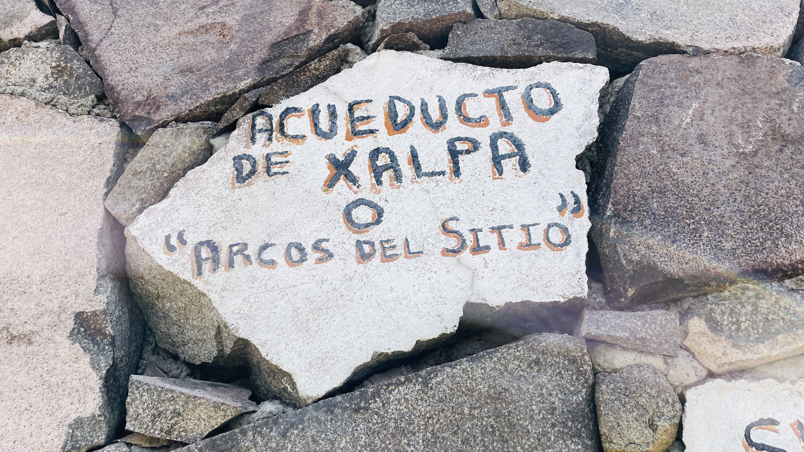
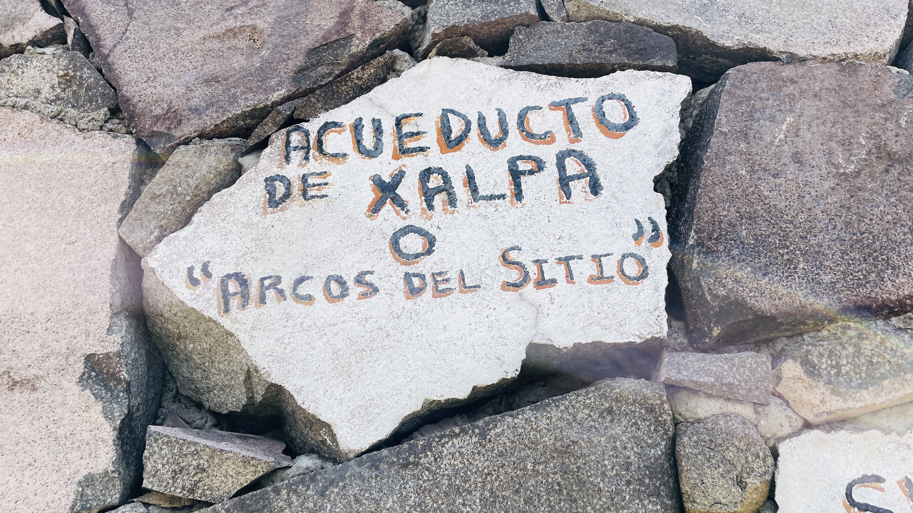
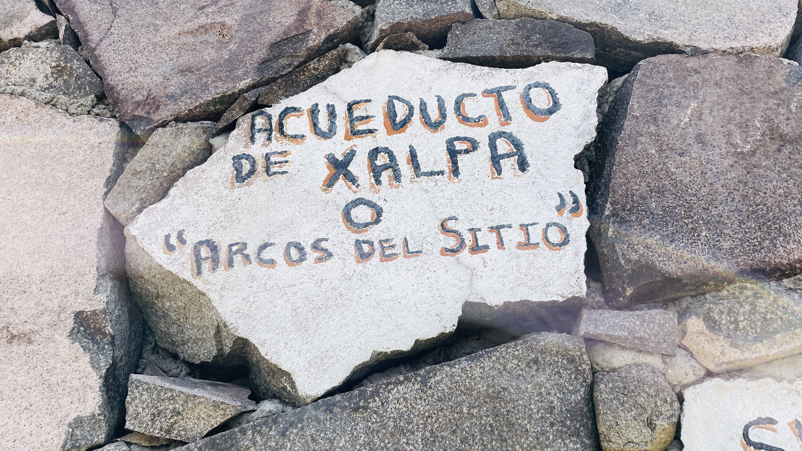
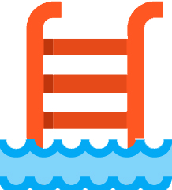
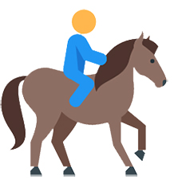
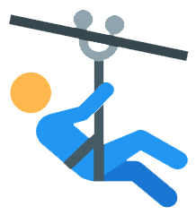
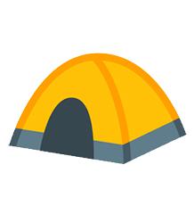
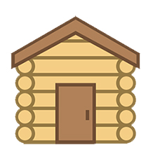

 

Los Arcos del Sitio, situados en Tepotzotlán, Estado de México, son una estructura histórica que data del siglo XVIII. Esta obra, construida por los jesuitas, forma parte del exconvento de San Francisco Javier, conocido como el Convento de Tepotzotlán, que fue uno de los principales centros de evangelización en la región. Los arcos se construyeron para proporcionar agua al convento y al pueblo, utilizando una ingeniosa obra de ingeniería hidráulica.
La estructura de los arcos es impresionante, con un diseño que combina estilo barroco y la funcionalidad de un acueducto. Los tres arcos principales se elevan majestuosamente, creando una vista panorámica que conecta el pasado colonial con la belleza natural del entorno. Los arcos fueron un símbolo de la prosperidad y poder de la orden jesuita en la época.
Durante los siglos siguientes, los Arcos del Sitio fueron testigos de numerosos eventos históricos, como las luchas de independencia y las reformas que afectaron a las órdenes religiosas. Hoy en día, los arcos son considerados uno de los principales atractivos turísticos de Tepotzotlán, y una muestra viviente de la herencia cultural y arquitectónica de México.
Con el paso de los años, este monumento ha sido cuidadosamente restaurado y preservado, permitiendo que las generaciones actuales disfruten de su majestuosidad. Los Arcos del Sitio no solo son un recordatorio de la época colonial, sino también un homenaje al trabajo artesanal y la visión de los constructores de esa época.
Alberca
Paseo A Caballo
Tirolesa
Camping
Cabañas
Palapas con Azador

VIAJE REDONDO
$390.00 MXN POR PERSONA
INCLUYE LA ENTRADA
SALIDAS PUNTUALES
ESTANCIA DEL DIA: TIEMPO LIBRE
SE ACEPTAN MASCOTAS
SALIDAS LOS 365 DIAS DEL AÑO
TRANSPORTE SEGURO Y CÓMODO
DIVERSIÓN GARANTIZADA
Copyright (c) 2025 Copyright Holder All Rights Reserved.